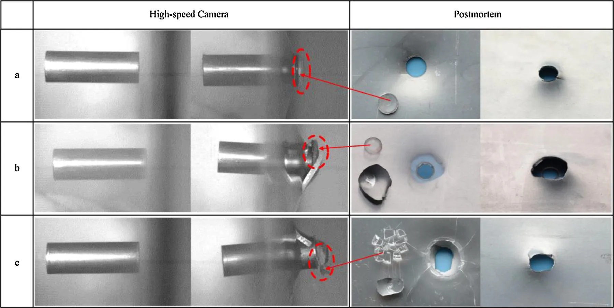

Home/Research
Research
Two independent research streams, plus earlier and collaborative work in impact mechanics. New to the field? Start with the Technical Notes & Glossary.
Two independent research streams, plus earlier and collaborative work in impact mechanics. New to the field? Start with the Technical Notes & Glossary.

A crash or impact simulation is only as good as its flow stress model. I determine that model from discrete dynamic test data, using SVD/CP tensor decomposition to test whether a decoupled (Johnson–Cook-type) form is admissible and to extrapolate beyond the calibrated strain-rate range (TEDI-FS). Scope: isotropic metals under J2 plasticity.

Lithium-ion cells can carry latent impact damage that shows no external sign. This stream characterizes failure modes and energy thresholds under impact, detects damage in real time from acoustic emission with deep learning, and links mechanical damage to electrochemical degradation with multiphysics FEM.

High-velocity impact of metallic and layered plates, 3D woven composites, and sandwich structures; ANN surrogate models for perforation and residual velocity; and a data-driven hardening model for anisotropic sheet forming. Several collaborative directions are in progress.
Constitutive stream: SVD and non-negative CP decomposition with neural networks, calibrated on SHPB and Taylor–Hopkinson tests. Battery stream: drop-weight and high-velocity impact tests, acoustic emission with deep learning, and coupled mechanical–electrochemical FEM.